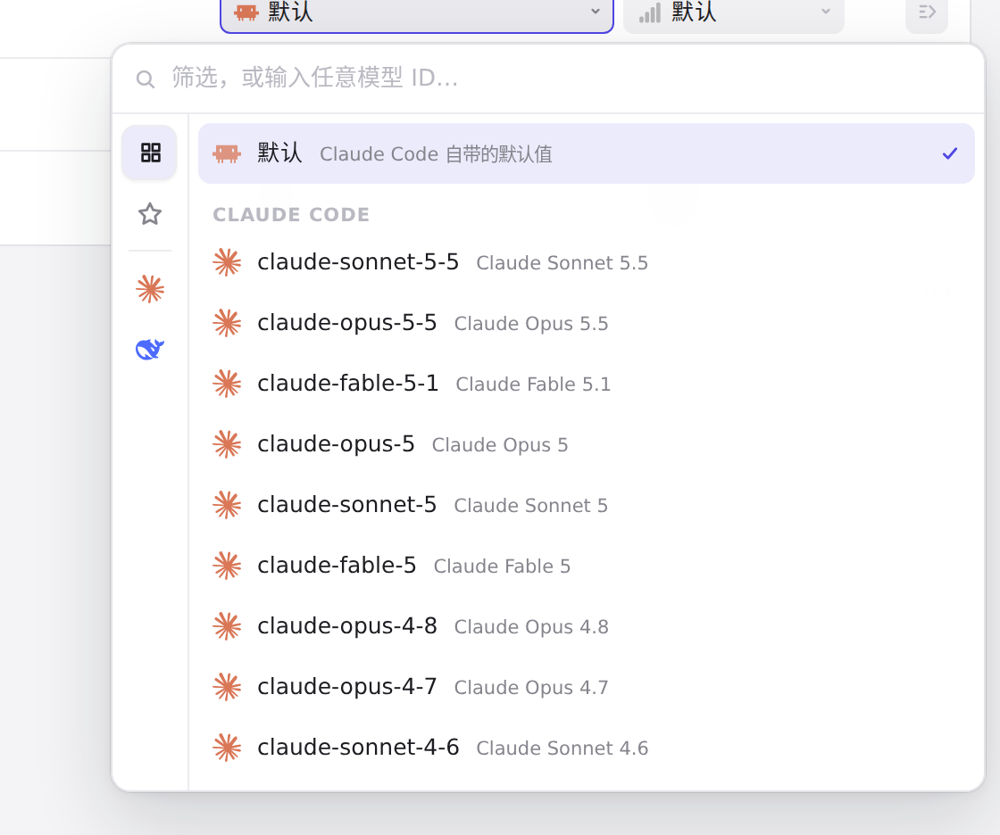
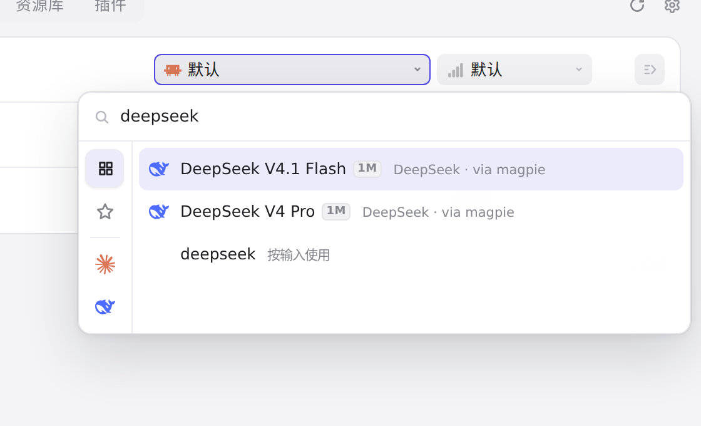
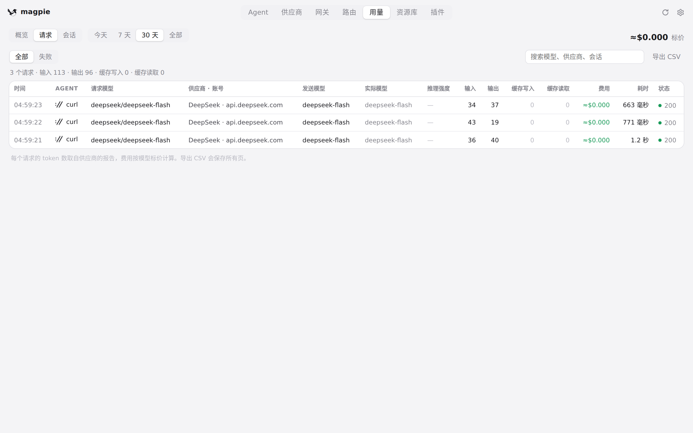
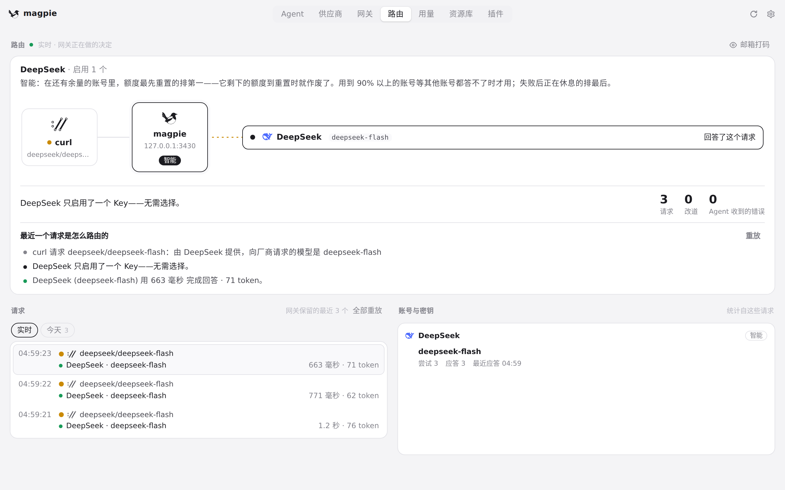

#391 界面预览
commit ff59244 · 回到 PR · 这次改动只作用于浏览器里的 web 模式：小屏/触屏下顶栏导航独占一行并可横向滚动、控件放大到约 44px，用量页筛选换行、请求搜索独占一行，设置偏好、供应商表单、接入表单和路由组编辑器在窄屏改为单列堆叠，路由组标签在 web 下不再隐藏；另外模型选择浮层限制在视口内、触屏上不再自动聚焦搜索框，触屏 web 保留原生惯性滚动，移动端不再收缩顶栏。没有新增页面、标签或按钮。
红线是鼠标走过的轨迹，红色圆环是一次点击；底部文字是这一步在做什么。空格暂停，← → 逐段查看。

模型选择器浮层 · 打开后的模型选择器浮层

模型选择器浮层 · 输入过滤词后的模型列表

用量页的请求筛选 · 请求标签下的筛选行与搜索框
 用量页的请求筛选 · 滚动后的请求列表
用量页的请求筛选 · 滚动后的请求列表

路由组编辑器 · 打开后的路由组编辑器